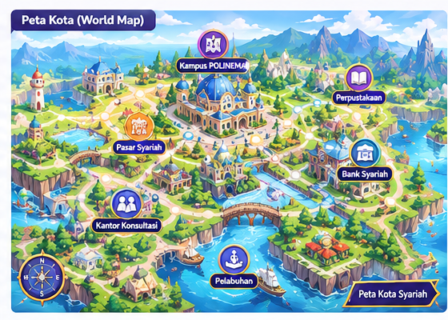

📚
BAB 01 · TERSEDIA
Perkenalan di Kampus Madani
Temui mentor dan pelajari dasar muamalah.
⏱ 5 menit+50 XP
Jelajahi kota, temui karakter, dan pelajari prinsip ekonomi syariah melalui pilihanmu.
Assalamu’alaikum! Kamu mahasiswa baru yang akan mengikuti program Konsultan Syariah, ya?
Pilih lokasi untuk membuka cerita dan misi baru.

Belajar melalui dialog, keputusan, dan tantangan singkat.
Temui mentor dan pelajari dasar muamalah.
Kenali transaksi yang adil dan amanah.
Jelajahi konsep akad dan pembiayaan.
Administrasi Niaga · Politeknik Negeri Malang
210 / 360 XP menuju Level 3Setiap pilihan dalam cerita membentuk perjalanan belajarmu. Selesaikan misi untuk membuka area dan karakter baru.
Kumpulkan penghargaan dari pilihan dan misi yang kamu selesaikan.